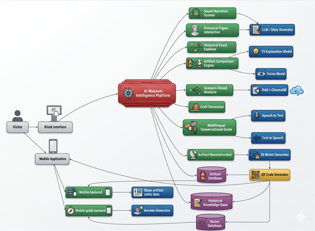

Bridging collections and communities through accessible design, clear storytelling, and measurable engagement—without replacing the power of being in the room with the work.
Digital transformation in museums has focused on improving user engagement and accessibility through interactive technologies. Traditional museum systems rely on static displays and text-based descriptions, which often lead to passive learning and reduced visitor interest. Early solutions such as mobile museum guides and interactive kiosks improved accessibility but lacked personalization and intelligent interaction capabilities [1]-[3].
The introduction of Artificial Intelligence (AI) and Natural Language Processing (NLP) enabled conversational museum guides capable of responding to user queries. However, Large Language Models (LLMs) often produce inaccurate or unverified information, known as hallucination [4]. To address this, Retrieval-Augmented Generation (RAG) has been proposed to ensure responses are grounded in reliable data sources.
In addition, AI-based sound narration systems have enhanced storytelling by providing dynamic, context-aware audio explanations, improving user engagement compared to traditional audio guides. Research also highlights the importance of interactive and active learning, showing that user participation significantly improves knowledge retention compared to passive content consumption.
Visualization techniques such as map- and timeline-based systems help users explore historical data across spatial and temporal dimensions, but they lack deeper relational understanding between events. To overcome this, graph-based models and Graph Neural Networks (GNNs) have been introduced to represent and analyze relationships between historical entities, enabling more advanced reasoning.
Furthermore, advancements in computer vision and generative AI have enabled artifact reconstruction, where damaged artifacts are digitally restored and converted into 3D models for interactive visualization. While these approaches improve user experience, they are typically implemented as standalone systems without integration with conversational or narration features.
Overall, existing research demonstrates significant progress in individual areas such as conversational AI, narration, visualization, and reconstruction. However, there remains a lack of integrated, multimodal systems that combine these technologies into a unified platform for immersive and intelligent museum experiences.
References (IEEE style)
H. P. Othman, C. Petrie, and M. K. Power, "Measuring the usability of a smartphone delivered museum guide," International Journal of Human-Computer Studies, 2010.
V. Teslyuk et al., "A mobile museum guide application," 2018.
D. Karahoca and A. Karahoca, "Designing an interactive museum guide," Procedia Computer Science, 2011.
"Large language model," Wikipedia, 2025.
K. I. D. Fonseka, "Museum guide mobile applications development," 2020.
B. Kindenberg, "The role of AI in historical simulation design," 2025.
"Hello History - Chat with AI generated historical figures," 2025.
"SeeMuseums - The world's first AI tour guide," 2025.
02 — Position
Research gap
◇
Lack of integrated multimodal systems
Existing solutions separate conversational AI, narration systems, and artifact reconstruction, creating fragmented user experiences instead of one unified intelligent platform.
◎
Limited immersive learning
Most systems still rely on text or basic audio and do not provide dynamic AI-driven narration with adaptive storytelling.
▣
Weak reconstruction support
3D reconstruction for damaged or incomplete artifacts is rarely integrated into mainstream museum guidance systems.
◉
LLM accuracy concerns
Conversational agents can produce hallucinated or unverified historical content when grounded retrieval is not enforced.
◌
Fragmented cultural knowledge
Historical data is often scattered across unstructured sources, limiting relational exploration and context-aware reasoning.
✦
Lack of persona interaction
Few platforms support historical persona-based interaction to create deeper, immersive engagement for visitors.
Research problem & solution
How can we design and develop an AI-powered interactive museum system that integrates conversational guidance, AI-driven sound narration, and 3D artifact reconstruction to provide an accurate, immersive, and context-aware cultural heritage experience?
Proposed solution: Build a multimodal museum platform that combines RAG-based conversational guidance, AI narration, persona interaction, and artifact reconstruction in one integrated user journey.
Discovery
Structured navigation and search-aware entry points into collections.
Access
Semantic HTML, contrast-aware theming, and resilient responsive layouts.
Insight
Privacy-conscious analytics hooks for iterative content improvement.
03 — Aims
Research objectives
Main objective: develop an AI-powered multimodal museum system that improves engagement through conversational interaction, intelligent narration, and immersive artifact visualization.
01
Accurate conversational retrieval
Implement a RAG-based conversational system that retrieves and serves grounded museum knowledge.
02
AI-driven sound narration
Develop a dynamic narration pipeline that adapts storytelling based on user context and artifact data.
03
3D artifact reconstruction
Enable reconstruction of damaged artifacts and present interactive 3D visualization outputs.
04
Historical persona interaction
Provide persona-based conversational experiences that increase immersion and contextual learning.
05
Multilingual communication
Support language diversity so a broader audience can access cultural content effectively.
06
Scalable real-time system behavior
Ensure low-latency response and architecture scalability for real-world museum deployments.
Methodology
The system is designed as a multimodal AI-powered museum platform with three main modules: (1) Conversational AI Guide with artifact and persona modes, (2) AI-based Sound Narration, and (3) 3D Artifact Reconstruction.
AI-based narration pipeline: user query and artifact context are matched against retrieved knowledge, then transformed into dynamic responses and audio output using TTS-based narration components.
Reconstruction pipeline: artifact selection (including QR-triggered entry), image capture, AI-based 2D restoration, conversion to interactive 3D (.glb), and user-facing visualization.
Conversational retrieval: RAG architecture combines semantic search and GPT-based response generation to reduce hallucination and keep answers grounded.
Data and session flow: data is authored through CMS workflows, stored in MongoDB, embedded into Qdrant for retrieval, and served with session-aware conversation memory for continuous interaction.

Figure 1 — System architecture diagram.
Stack
Technologies
At a glance
Tools & technologies
Python
Flutter
React
Supabase
MongoDB
Gemini
Meshy AI
OpenAI
Git
GitHub
VS Code
AWS
FastAPI
Python
Flutter
React
Supabase
MongoDB
Gemini
Meshy AI
OpenAI
Git
GitHub
VS Code
AWS
FastAPI
Core tools and services for this project—backend, mobile, web, data, cloud, and AI.
Python
Backend logic & scripting
Flutter
Cross-platform mobile UI
React
Web interface components
Supabase
Auth, database & realtime
MongoDB
Document data store
Gemini
Google multimodal AI
Meshy AI
3D & asset generation
OpenAI
LLMs & APIs
Git
Version control
GitHub
Repository & workflows
VS Code
Development environment
AWS
Cloud infrastructure
FastAPI
Python API framework
04 — Plan
Milestones
01
Project Proposal
Scope, risk, and ethics framing for sponsor or panel review.
02
Progress Presentation-1
Design system, information architecture, and working vertical slice.
03
Progress Presentation-2
Integrated demo, evaluation plan, and poster narrative.
04
Final Assessment
Final system demo with implementation quality, evaluation results, and complete report submission.
05
Viva
Individual contribution review, technical defense, and project Q&A session.